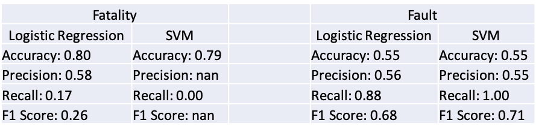

Car crashes are the leading cause of death in the U.S. for people under 54 years old. There is an average of 114 fatal car accidents a per day as of 2020.
In this analysis I take a look at real-world data to investigate if there is potential benefit Data Science can offer in identifying which factors contribute to a fatal versus non-fatal car crash. The analysis also attempts to see if fault can be evaluated based on a machine learning algorithm which may help insurance companies allocate fault in these types of situations.
View on GitHubData Preparation
Data.gov hosts a dataset of crash reporting data collected from Montgomery County, Maryland which was used as a sample. I utilized Apache Spark to store the data to gain familiarity with Spark.
Feature Engineering
In order to deal with imbalanced target classes, with fatal accidents being far less common than non-fatal, I introduced "Oversampling" to the dataset and saved it back to the Spark table. I then extracted a data set to use in machine learning models by selecting relevant features such as weather conditions, surface conditions, and substance abuse. These categorical features were encoded into numerical vectors for use in Sci-Kit Learn"
Models
Two traditional Machine Learning models were explored to perform this binary classification problem using Sci-Kit Learn, Logistic Regression and Support Vector Machine. Due to the imbalanced nature of the data, both models have a high accuracy but low precision and recall, yielding a low F1 score. The model predicts mainly a non-fatal outcome because it is over-represented in the data even despite oversampling.

Takeaways
Logistic Regression works best in this scenario at least when compared with Support Vector Machine. I believe Data Science has the potential to be of use for identifying potentially risky or dangerous conditions to drive. If we can solve the factors which contribute to fatal accidents, we can advise drivers to be aware of such factors.
If you'd like to get in touch, feel free to reach out to me at: